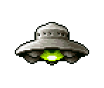

<!DOCTYPE html>
<html lang="en">
<head>
    <meta charset="UTF-8">
    <meta http-equiv="X-UA-Compatible" content="IE=edge">
    <meta name="viewport" content="width=device-width, initial-scale=1.0">
    <title>Document</title>
    <style>
        body{
            background-image: url(https://th.bing.com/th/id/R.ffac4a5ca17eb3472cc5c3fcd6caaa2d?rik=PBfHDUfysnPmmA&pid=ImgRaw&r=0);
        }
    </style>
</head>
<body onload="docReady()">
    <script src="https://code.jquery.com/jquery-2.1.0.js"></script>
    
    <script>
        var Ufo = function (x, y){
            this.x = x;
            this.y = y;
        };

        Ufo.prototype.rysuj = function(){
            var UfoHtml = '';

            this.UfoElement = $(UfoHtml);
            
            this.UfoElement.css({
                position: "absolute",
                left: this.x,
                top: this.y
            });

            $("body").append(this.UfoElement);
        };

        Ufo.prototype.wPrawo = function(){
            this.x += 15;

            this.UfoElement.css({
                left: this.x,
                top: this.y
            })
        }

        Ufo.prototype.wLewo = function(){
            this.x -= 15;

            this.UfoElement.css({
                left: this.x,
                top: this.y
            })
        }

        Ufo.prototype.wGore = function(){
            this.y -= 15;

            this.UfoElement.css({
                left: this.x,
                top: this.y
            })
        }

        Ufo.prototype.wDol = function(){
            this.y += 15;

            this.UfoElement.css({
                left: this.x,
                top: this.y
            })
        }
 
        function moveSelection(evt) {
            switch (evt.keyCode) {
                case 37:
                ufo.wLewo();
                break;
                case 39:
                ufo.wPrawo();
                break;
                case 38:
                ufo.wGore();
                break;
                case 40:
                ufo.wDol();
                break;
            }
        };

        function docReady()
        {   
          window.addEventListener('keydown', moveSelection);
        }

        var ufo = new Ufo(20, 20);

        ufo.rysuj();
    </script>

</body>
</html>